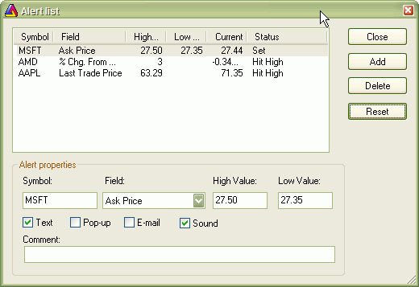

The Easy Alerts window allows you to define real-time alerts without any coding. Please note that this functionality is available ONLY if you are using real-time data plugin and is not available in end-of-day mode.

Adding new alert
An alert will be generated when the selected price field (for example, Ask) becomes equal to or greater than the High value (if defined), or when the selected price field becomes equal to or less than the Low value (if defined). An alert, once hit, will not re-trigger until you press "Reset".
Modifying an alert
Select one of the listed alerts and modify values in the edit fields below. If you want to modify an alert that was already hit, after making modifications, please press "Reset" button.
Deleting alerts
Select one or more alerts from the list (multiple selection possible by holding down the SHIFT key) and then press the Delete button.
Resetting triggered alerts
The alert that was once hit is marked as "Hit high" or "Hit low" in the status field and becomes inactive (won't trigger anymore). If you want to re-activate it, select it from the list and press the Reset button.
Types of alert output